材料 6個分
※粉量を変えると自動計算されます
生地
フィリング
アイシング
型
作り方
生地
STEP 1
仕込み水を作る
カップに卵黄1個を割り入れ、常温のお水を加えて100gにします。さらに、砂糖とドライイーストを加え、よく混ぜ合わせます。
カップに卵黄1個を割り入れ、常温のお水を加えて100gにします。さらに、砂糖とドライイーストを加え、よく混ぜ合わせます。
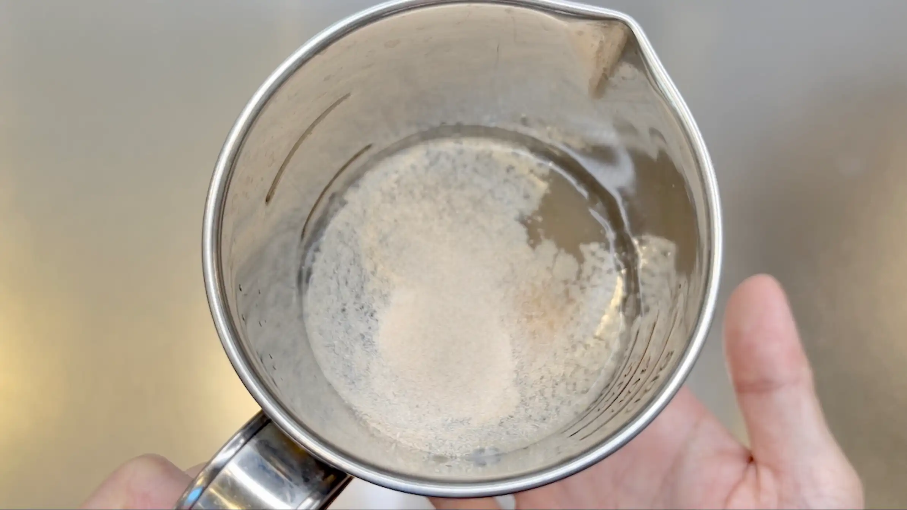
STEP 2
粉類を混ぜ、仕込み水を加えて混ぜる
ボウルに強力粉と塩を混ぜ、仕込み水を加えてヘラで1分半ほど混ぜます。粉気がなくなり、ひとまとまりになればOKです。
ボウルに強力粉と塩を混ぜ、仕込み水を加えてヘラで1分半ほど混ぜます。粉気がなくなり、ひとまとまりになればOKです。
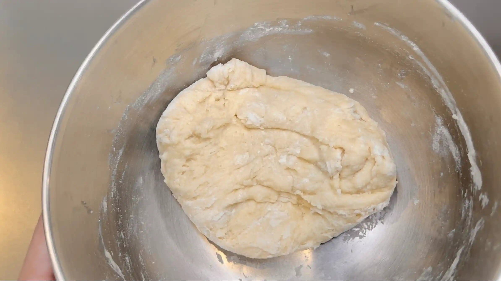
STEP 3
バターを加え、手でこねる（[動画 04:45]）
バターを加え、手で3分こねます。こねていくうちに、ある程度生地がまとまってきますが、かなりベタつきが残ります。今回は生地を休ませながら仕上げていくため、ここではこね上げる必要はありません。
バターを加え、手で3分こねます。こねていくうちに、ある程度生地がまとまってきますが、かなりベタつきが残ります。今回は生地を休ませながら仕上げていくため、ここではこね上げる必要はありません。
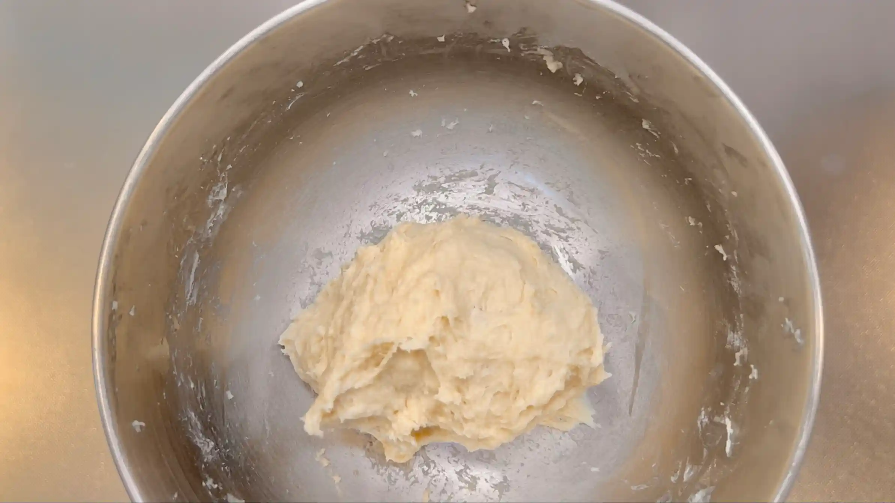
STEP 4
室温で20分おく
生地の表面をヘラで整え、乾燥しないようにラップをして、室温で20分ほどおきます。ここで生地を休ませることで、段々と扱いやすい生地になっていきます。
生地の表面をヘラで整え、乾燥しないようにラップをして、室温で20分ほどおきます。ここで生地を休ませることで、段々と扱いやすい生地になっていきます。
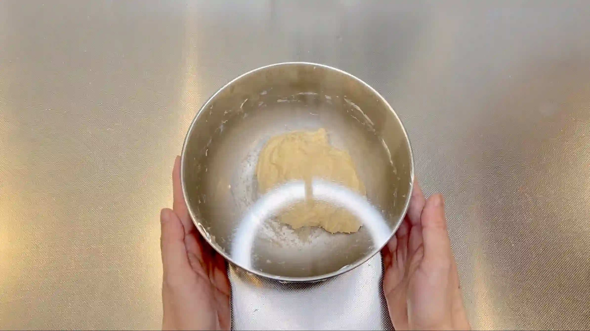
STEP 5
オーブンシートで型を作る（[動画 07:41]）
オーブンシートを24㎝×30㎝にカットし、画像のように折って「高さ6㎝×幅12㎝×長さ18㎝」の型を作ります。型の角はねじるか、ホッチキスで止めて、生地が膨らんできても形が崩れないようにしておきます。
オーブンシートを24㎝×30㎝にカットし、画像のように折って「高さ6㎝×幅12㎝×長さ18㎝」の型を作ります。型の角はねじるか、ホッチキスで止めて、生地が膨らんできても形が崩れないようにしておきます。
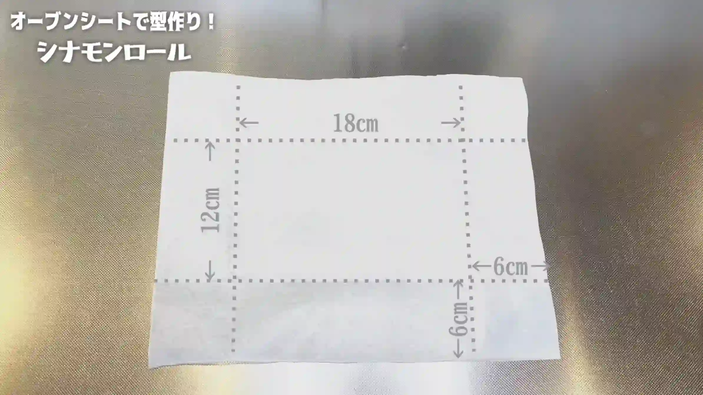
STEP 6
生地をボウルの中で叩く（[動画 09:38]）
休ませた生地をボウルの中で3分ほど叩きます。最初は生地がベタつくため、ボウルの中に生地を落とすようにして刺激を与えます。ある程度まとまってきたら生地を叩きつけ、表面がつるっとしたら次の工程へ進みます。
休ませた生地をボウルの中で3分ほど叩きます。最初は生地がベタつくため、ボウルの中に生地を落とすようにして刺激を与えます。ある程度まとまってきたら生地を叩きつけ、表面がつるっとしたら次の工程へ進みます。
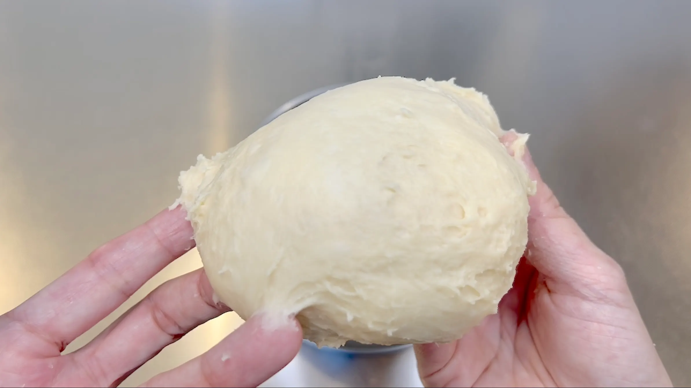
STEP 7
室温で生地が2倍に膨らむまでおく
生地の表面を整え、乾燥しないようにラップをして、室温で一次発酵させます。60分ほどを目安に、生地が元の約2倍に膨らんだら次の工程へ進みます。発酵時間は室温によって変わるため、生地の膨らみを確認してください。
生地の表面を整え、乾燥しないようにラップをして、室温で一次発酵させます。60分ほどを目安に、生地が元の約2倍に膨らんだら次の工程へ進みます。発酵時間は室温によって変わるため、生地の膨らみを確認してください。
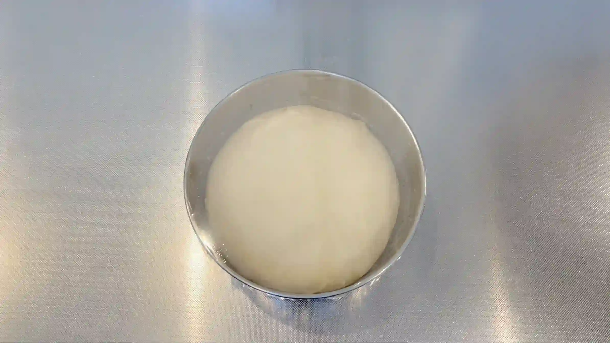
STEP 8
フィリングの準備をする
STEP 9
生地を18㎝×18㎝に広げる（[動画 12:58]）
作業台に打ち粉をして生地を取り出し、生地の表面にも打ち粉をします。生地がやわらかいため、めん棒は使わず、手でやさしく広げていきます。ふんわりした食感に仕上げるため、生地は伸ばしすぎず、厚めにしておきます。
作業台に打ち粉をして生地を取り出し、生地の表面にも打ち粉をします。生地がやわらかいため、めん棒は使わず、手でやさしく広げていきます。ふんわりした食感に仕上げるため、生地は伸ばしすぎず、厚めにしておきます。
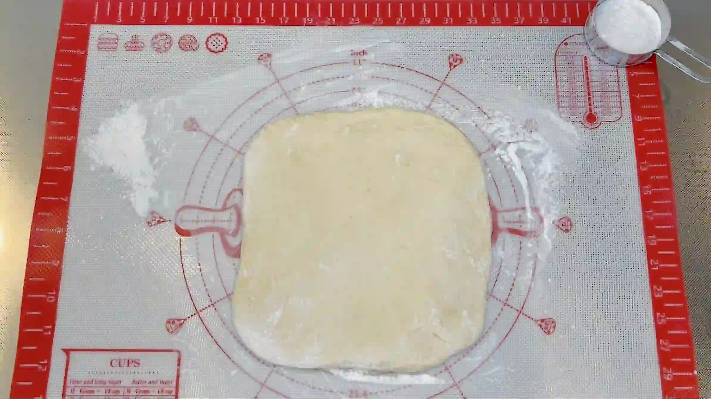
STEP 10
フィリングをのせる（[動画 15:32]）
生地全体にバターを塗り、シナモンシュガーをかけます。今回は型に入れてちぎりパンのように焼くため、巻き終わりを閉じる必要がありません。そのため、フィリングの余白は作らず、生地全体にかけます。
生地全体にバターを塗り、シナモンシュガーをかけます。今回は型に入れてちぎりパンのように焼くため、巻き終わりを閉じる必要がありません。そのため、フィリングの余白は作らず、生地全体にかけます。
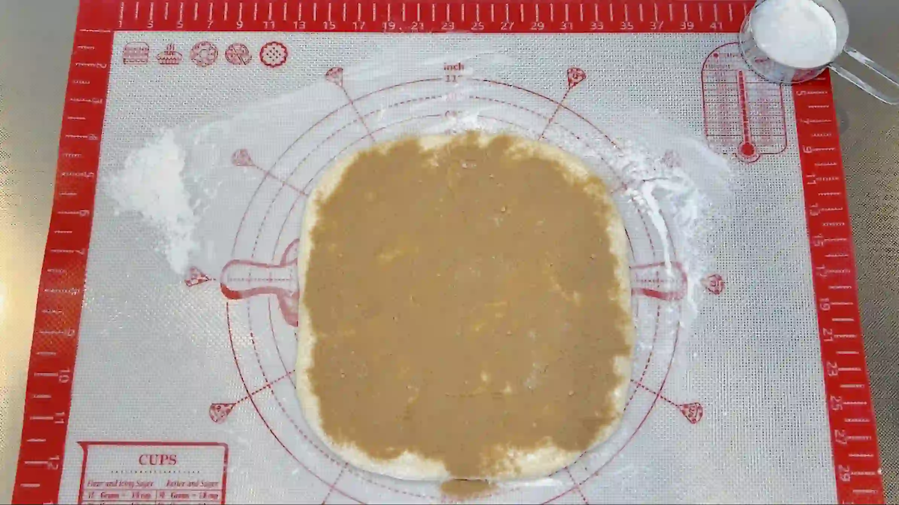
STEP 11
生地を巻く（[動画 16:23]）
巻き始めは生地で芯を作るようにして、とっかかりを作ってから生地を巻いていきます。生地がやわらかいため、力を入れすぎず、やさしく巻くのがポイントです。巻き終わりは閉じずに、下にして次の工程へ進みます。
巻き始めは生地で芯を作るようにして、とっかかりを作ってから生地を巻いていきます。生地がやわらかいため、力を入れすぎず、やさしく巻くのがポイントです。巻き終わりは閉じずに、下にして次の工程へ進みます。
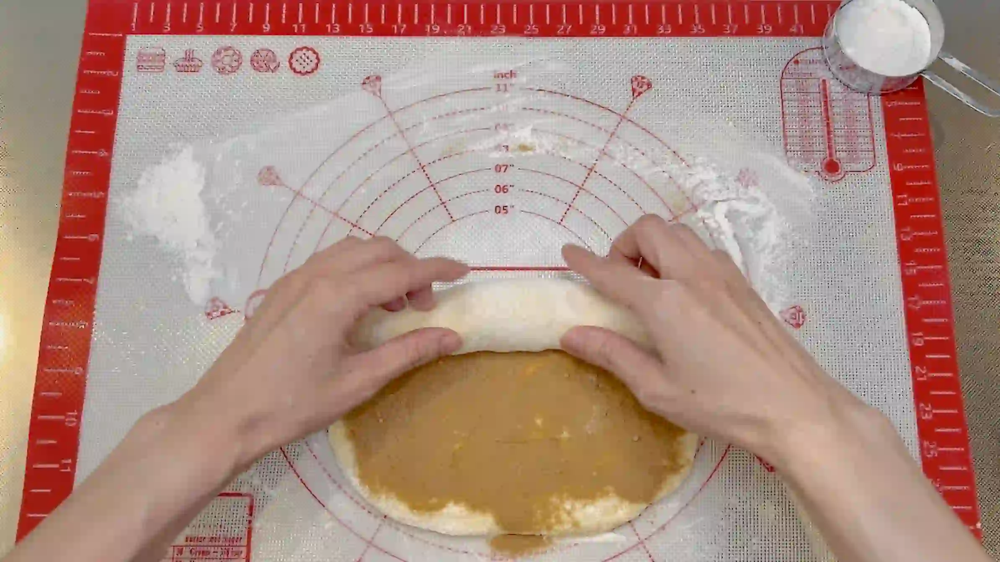
STEP 12
生地を糸で6等分する（[動画 17:11]）
巻いた生地に糸を軽く押し当てて、6等分の目印をつけてから、切っていきます。生地の下に糸を通して、上で交差させて左右に引くと、きれいに切れます。包丁でも切れますが、生地がやわらかく断面がつぶれやすいため、糸で切るのがおすすめです。
巻いた生地に糸を軽く押し当てて、6等分の目印をつけてから、切っていきます。生地の下に糸を通して、上で交差させて左右に引くと、きれいに切れます。包丁でも切れますが、生地がやわらかく断面がつぶれやすいため、糸で切るのがおすすめです。
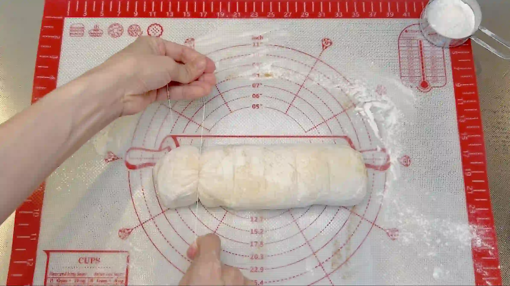
STEP 13
生地を型に入れる（[動画 18:13]）
生地は膨らむので、少し間を空けて型に入れます。
生地は膨らむので、少し間を空けて型に入れます。
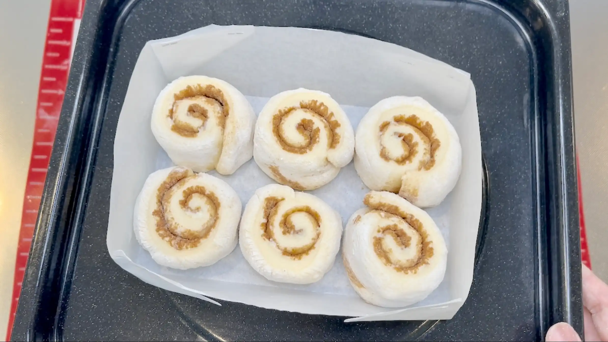
STEP 14
室温で生地がふっくらするまでおく
乾燥しないようにラップをして、室温で40分ほどを目安に、生地がふっくらするまで二次発酵させます。時間だけで判断せず、生地が型いっぱいに膨らんだことを確認してから焼き始めます。
乾燥しないようにラップをして、室温で40分ほどを目安に、生地がふっくらするまで二次発酵させます。時間だけで判断せず、生地が型いっぱいに膨らんだことを確認してから焼き始めます。
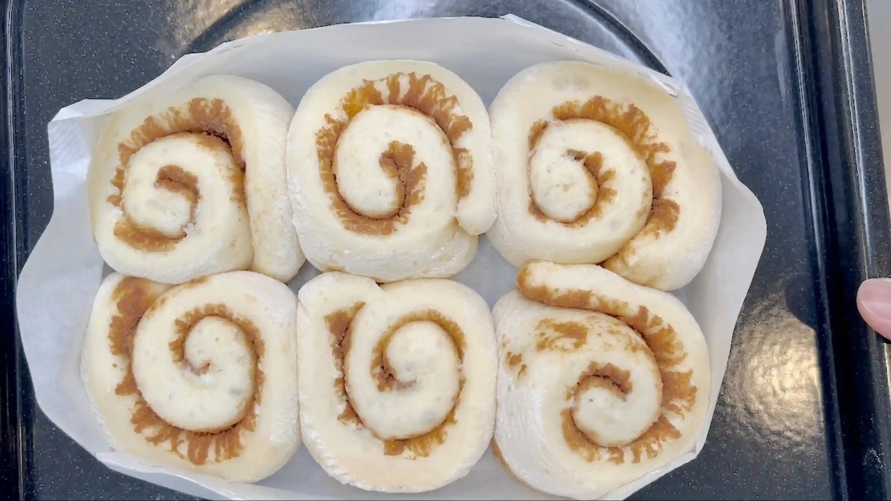
STEP 15
牛乳を塗り、予熱なしのオーブン180℃で25分焼く
生地の表面に牛乳を塗り、予熱をしていないオーブンに入れて、180℃で約25分焼きます。予熱をしないことで、生地の表面が焼き固まる前に中にもゆっくり火が入り、ふっくらと焼き上がります。焼成中に表面が先に色づいた場合は、アルミホイルをふんわりとかぶせてください。オーブンの仕様により焼き加減が異なるため、ご家庭のオーブンに合わせて焼き時間を調整してください。
生地の表面に牛乳を塗り、予熱をしていないオーブンに入れて、180℃で約25分焼きます。予熱をしないことで、生地の表面が焼き固まる前に中にもゆっくり火が入り、ふっくらと焼き上がります。焼成中に表面が先に色づいた場合は、アルミホイルをふんわりとかぶせてください。オーブンの仕様により焼き加減が異なるため、ご家庭のオーブンに合わせて焼き時間を調整してください。
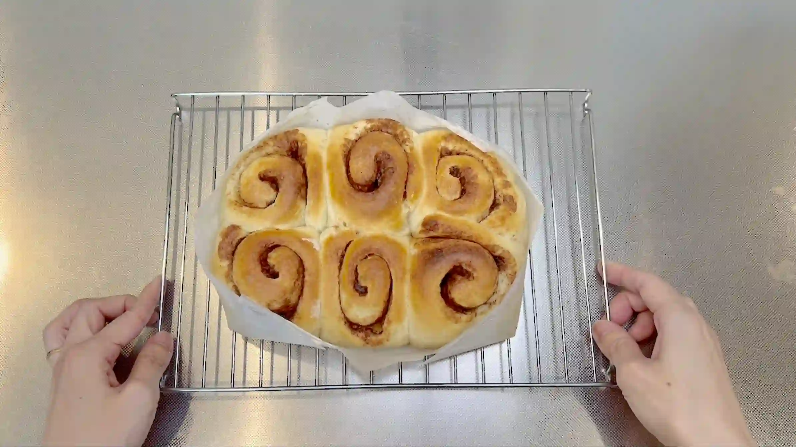
STEP 16
アイシングの準備をする
STEP 17
アイシングをかける
生地が熱いとアイシングが溶けて流れてしまうため、粗熱をとってから、たっぷりかけます。
生地が熱いとアイシングが溶けて流れてしまうため、粗熱をとってから、たっぷりかけます。
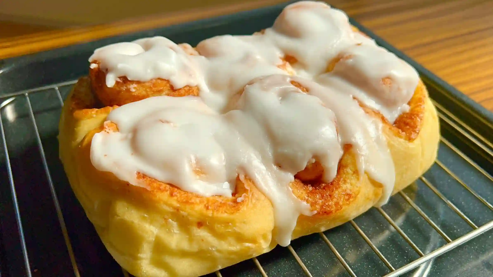
フィリング
STEP 1
シナモンシュガーを作る
砂糖とシナモンを混ぜ、シナモンシュガーを作っておきます。砂糖は生地にかけやすいよう、サラサラとしたものを使うのがおすすめです。今回はきび砂糖を使っています。
砂糖とシナモンを混ぜ、シナモンシュガーを作っておきます。砂糖は生地にかけやすいよう、サラサラとしたものを使うのがおすすめです。今回はきび砂糖を使っています。
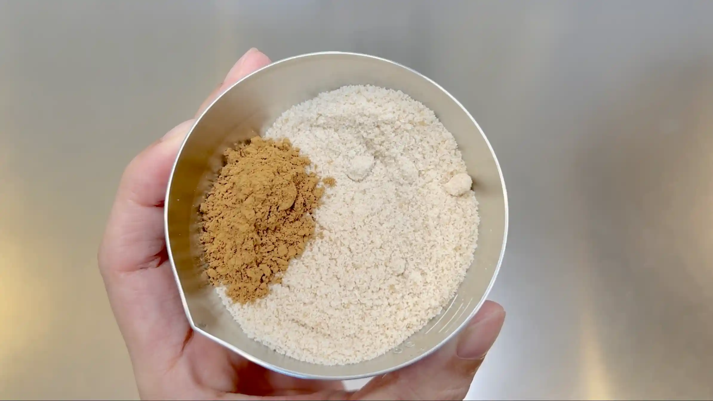
STEP 2
バターをクリーム状にする
バターをヘラで混ぜて、生地に塗りやすいクリーム状のやわらかさにしておきます。バターが硬い場合は、レンジで5秒ずつ加熱して、溶かさないように少しずつやわらかくしてください。
バターをヘラで混ぜて、生地に塗りやすいクリーム状のやわらかさにしておきます。バターが硬い場合は、レンジで5秒ずつ加熱して、溶かさないように少しずつやわらかくしてください。
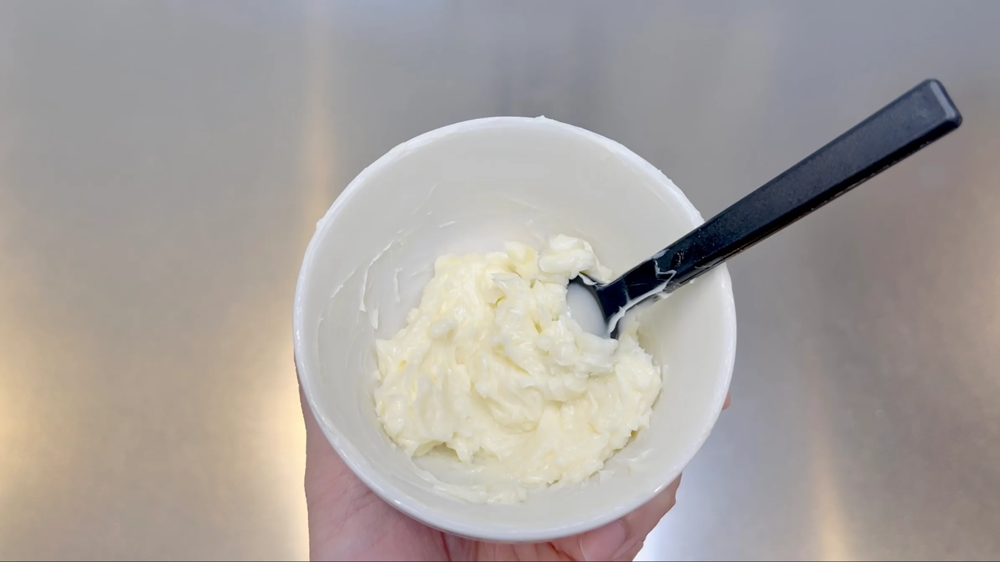
アイシング
STEP 1
アイシングを作る
粉糖に水を少量ずつ加えて、スプーンでよく混ぜます。持ち上げるとゆっくり流れ落ちるくらいの、とろりとした硬さになればOKです。水を入れすぎるとゆるくなるので、少しずつ加えて調整してください。
粉糖に水を少量ずつ加えて、スプーンでよく混ぜます。持ち上げるとゆっくり流れ落ちるくらいの、とろりとした硬さになればOKです。水を入れすぎるとゆるくなるので、少しずつ加えて調整してください。
動画でチェック
おいしく作るためのワンポイントコラム
こんにちは、おなおドーナツです！
今回は、オーブンシートで作った型に入れて焼く『シナモンロール』を作っていきます！春よ恋を使って、ふんわりやわらかい生地に仕上げるための大切なポイントを3つにまとめました。
① 春よ恋をふんわり焼く工夫
春よ恋は膨らみが弱めの小麦粉なので、今回は卵黄の膨らむ力で補います。さらに、生地を厚めに広げて、巻き数を少なくすることで、ふんわりとした食感に仕上げます。焼くときは、型に入れて予熱なしのオーブンで焼くのがポイントです。生地の表面が焼き固まる前に中までゆっくり火が入り、ふっくらと焼き上がります。
② 渦巻きが飛び出ないコツ
シナモンロールは、焼いたときに真ん中の渦巻きが飛び出してしまうことがあります。これを防ぐために、生地をふんわりと巻き、巻き終わりを閉じないようにしています。こうすると、焼いたときの膨らみが横に逃げやすくなり、渦巻きが飛び出さず、きれいな形に焼き上がります。
③ 二次発酵のコツ
二次発酵の長さは、好みの食感に合わせて調整してみてください。しっとりどっしりとした食感が好きな方は短めに、軽くてふんわりとした食感が好きな方は長めにとるのがおすすめです。今回は40分ほどを目安にしていますが、ご自身の好みの食感を探してみてください。
焼き上がったらアイシングをたっぷりかけて、手でちぎりながらいただきましょう！それでは、おうちパン作りの時間を一緒に満喫しましょう！
今回は、オーブンシートで作った型に入れて焼く『シナモンロール』を作っていきます！春よ恋を使って、ふんわりやわらかい生地に仕上げるための大切なポイントを3つにまとめました。
① 春よ恋をふんわり焼く工夫
春よ恋は膨らみが弱めの小麦粉なので、今回は卵黄の膨らむ力で補います。さらに、生地を厚めに広げて、巻き数を少なくすることで、ふんわりとした食感に仕上げます。焼くときは、型に入れて予熱なしのオーブンで焼くのがポイントです。生地の表面が焼き固まる前に中までゆっくり火が入り、ふっくらと焼き上がります。
② 渦巻きが飛び出ないコツ
シナモンロールは、焼いたときに真ん中の渦巻きが飛び出してしまうことがあります。これを防ぐために、生地をふんわりと巻き、巻き終わりを閉じないようにしています。こうすると、焼いたときの膨らみが横に逃げやすくなり、渦巻きが飛び出さず、きれいな形に焼き上がります。
③ 二次発酵のコツ
二次発酵の長さは、好みの食感に合わせて調整してみてください。しっとりどっしりとした食感が好きな方は短めに、軽くてふんわりとした食感が好きな方は長めにとるのがおすすめです。今回は40分ほどを目安にしていますが、ご自身の好みの食感を探してみてください。
焼き上がったらアイシングをたっぷりかけて、手でちぎりながらいただきましょう！それでは、おうちパン作りの時間を一緒に満喫しましょう！


今回は、オーブンシートの型に入れて焼き上げる「シナモンロール」のご紹介です！春よ恋を使って、翌日もふわふわの生地に仕上げた、手でちぎって食べられるアメリカンスタイルのシナモンロールです。
コラムでは「春よ恋をふんわり焼く工夫」「渦巻きが飛び出ないコツ」「二次発酵のコツ」の3つのコツをご紹介します。